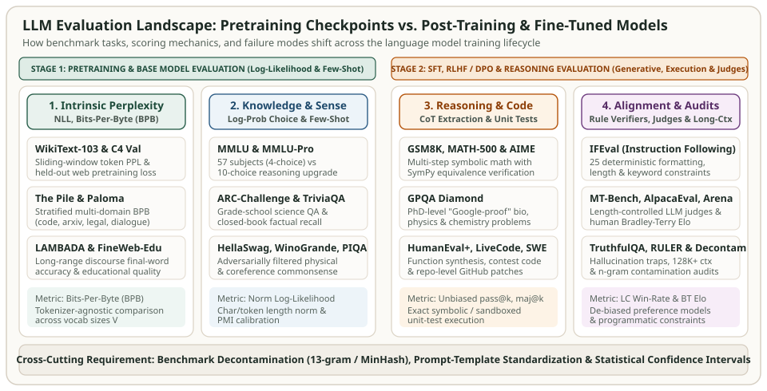

LLM Evaluation Datasets & Benchmarks: From Pretraining Perplexity to Post-Training Alignment
How do we know whether a new pretraining data mix, architecture tweak, supervised fine-tuning (SFT) recipe, or reinforcement learning (RLHF / DPO / RLVR) run genuinely improved a language model? In modern LLM engineering, evaluation is not a single leaderboard number—it is a staged measurement pipeline where the appropriate dataset, prompt format, and scoring rule depend entirely on where the checkpoint sits in the training lifecycle.
Evaluate a raw base checkpoint with an instruction-following chat prompt and it will appear broken because it continues the question rather than answering it. Conversely, evaluate a reasoning-tuned checkpoint using single-token multiple-choice log-probabilities and you prevent it from using the very chain-of-thought tokens it was trained to generate. This series examines the canonical datasets and benchmarks used across frontier labs and open-source harnesses (`lm-evaluation-harness`, HELM, EvalPlus, SWE-bench, and LMSYS Chatbot Arena) to evaluate pretraining and fine-tuning, deriving the exact scoring equations and diagnosing the subtle pitfalls that regularly invalidate benchmark comparisons.


Why Pretraining and Fine-Tuning Require Different Evaluation Mechanics
During pretraining, a base model is trained purely to minimize autoregressive cross-entropy loss over heterogeneous text corpora. Base checkpoints have not yet learned chat templates (`<|user|>`, `<|assistant|>`), refusal boundaries, or explicit answer-box conventions (`\boxed{}`). Consequently, base model evaluation relies on three signals that require zero instruction tuning:
- Intrinsic compression (Perplexity & Bits-Per-Byte): Measuring negative log-likelihood on held-out domain corpora (WikiText-103, C4, The Pile, Paloma) to verify smooth scaling laws before task emergence.
- Log-likelihood continuation ranking: Presenting a context $x$ and candidate completions $\{y_1, \dots, y_K\}$ (such as HellaSwag, PIQA, WinoGrande, or ARC) and selecting the candidate with the highest length-normalized or PMI-calibrated conditional log-probability.
- In-context $k$-shot prompting: Prepending $k$ solved exemplars (e.g., 5-shot MMLU or 8-shot GSM8K) so a base model infers the input-output format via in-context learning.
Once a model undergoes Supervised Fine-Tuning (SFT), Direct Preference Optimization (DPO), or Reinforcement Learning with Verifiable Rewards (RLVR), the evaluation target shifts from next-token likelihoods to end-to-end generated trajectories:
- Exact symbolic and programmatic verification: Generating full chain-of-thought derivations on GSM8K, MATH-500, AIME, and GPQA Diamond, or checking 25 deterministic formatting constraints on IFEval.
- Sandboxed execution ($\text{pass@}k$): Running generated functions and repository patches against unit test suites in HumanEval+, MBPP+, LiveCodeBench, and SWE-bench Verified.
- Pairwise preference & rubric judging: Scoring multi-turn helpfulness, style, and safety using length-controlled LLM judges (MT-Bench, AlpacaEval 2.0, Arena-Hard) and blind human battles (Chatbot Arena).
The Four Mathematical Scoring Paradigms
Before comparing two benchmark tables, verify which of the four mathematical scoring formulations produced the numbers:
1. Tokenizer-Agnostic Bits-Per-Byte (BPB)
Standard token-level perplexity $\operatorname{PPL}_{\text{tok}} = \exp\!\left(-\frac{1}{N_{\text{tok}}}\sum_{t=1}^{N_{\text{tok}}} \ln P_\theta(u_t \mid u_{<t})\right)$ penalizes models with larger vocabularies because each token spans more characters. Converting total negative log-likelihood (in nats) into Bits-Per-Byte (BPB) over the raw UTF-8 byte length $N_{\text{bytes}}$ makes compression strictly comparable across any tokenizer:
2. Length-Normalized & PMI-Calibrated Multiple Choice
When scoring candidate continuations $y_c = (y_{c,1}, \dots, y_{c,L_c})$ given prompt $x$, raw sum log-likelihood $\sum_{t=1}^{L_c} \ln P_\theta(y_{c,t} \mid x, y_{c,<t})$ systematically favors shorter strings, whereas character-length normalization (`acc_norm` in `lm-eval`) divides by byte/character count $|y_c|_{\text{char}}$ and Pointwise Mutual Information (PMI / Domain Conditional Likelihood) subtracts the unconditional prior $\ln P_\theta(y_c \mid x_{\text{null}})$:
3. Unbiased Code & Reasoning $\operatorname{pass@}k$
Given $n \ge k$ independent samples generated at temperature $T > 0$ for a coding or math problem where $c$ samples pass all unit tests, the minimum-variance unbiased estimator of the probability that at least one sample in a random subset of size $k$ passes (Chen et al., 2021) is:
4. Bradley-Terry Pairwise Preference & Length-Controlled Win Rate
For open-ended chat evaluation across $M$ models, the Bradley-Terry model estimates latent skill ratings $\theta_i$ from pairwise battle outcomes $y_{ij} \in \{0, 0.5, 1\}$, optionally controlling for response-length bias $\beta_{\text{len}} \cdot \Delta\text{len}_{ij}$ (Dubois et al., 2024):
Master Comparison of Popular LLM Evaluation Datasets
| Dataset / Benchmark | Primary Stage | Size & Structure | Canonical Metric | Key Diagnostic / Pitfall |
|---|---|---|---|---|
| WikiText-103 / C4 / Paloma | Pretraining (Intrinsic) | Held-out web, encyclopedic & 585 stratified domains | Bits-Per-Byte (BPB) / Word PPL | Raw token PPL is invalid across different BPE vocabularies |
| LAMBADA | Pretraining (Long-Range) | 5,153 narrative passages requiring full context for final word | Last-word exact match & PPL | Multi-token subword splits require greedy full-word decoding |
| MMLU & MMLU-Pro | Pretraining & Post-Training | 14,042 (57 subjects, 4-choice) / 12,032 (10-choice CoT) | 5-shot Acc / CoT Exact Match | Cloze vs letter log-prob prompts swing scores by 5–10% |
| ARC (Easy & Challenge) | Pretraining (Knowledge/Reasoning) | 7,787 grade-school science questions (2,590 Challenge) | Character-norm Acc (acc_norm) |
Unnormalized log-likelihood penalizes multi-clause choices |
| HellaSwag & PIQA | Pretraining (Commonsense) | 10,042 validation ActivityNet/WikiHow & 1,838 physical QA | acc_norm (byte-length norm) |
Provides smooth early-training signal before MMLU emerges |
| WinoGrande | Pretraining (Coreference) | 44K Winograd schema pronoun-resolution problems | Prefix-swap log-prob accuracy | Requires scoring suffix $P(\text{suffix} \mid \text{prefix+entity})$, not prefix |
| GSM8K & MATH-500 | Pretraining (Few-Shot) & SFT/RLVR | 1,319 test grade-school & 500 competition math problems | CoT Exact Match / SymPy Equiv | Regex string matching fails on equivalent LaTeX fractions |
| GPQA Diamond | Post-Training & Frontier Reasoning | 198 PhD-validated biology, physics & chemistry questions | Zero/Few-shot CoT Accuracy | Small $N=198$ gives $\pm 3.5\%$ standard error per single run |
| HumanEval+ & MBPP+ (EvalPlus) | Code Pretraining & Code SFT | 164 & 378 Python synthesis tasks with $80\times$ test expansion | Unbiased $\operatorname{pass@}k$ | Base HumanEval misses boundary bugs caught by EvalPlus |
| LiveCodeBench & SWE-bench | Code Reasoning & Software Agents | Time-stamped contest problems & 500 verified GitHub PRs | $\operatorname{pass@}1$ & Resolved % (F2P + P2P) | Cutoff filtering prevents training-set leakage on old issues |
| IFEval | Instruction Tuning (SFT / DPO) | 541 prompts with 25 verifiable formatting/count constraints | Prompt & Instruction Strict/Loose Acc | Deterministic Python checks eliminate LLM-judge bias |
| MT-Bench, AlpacaEval 2 & Arena | Chat & Preference Alignment | 80 2-turn prompts, 805 instructions & live human battles | LC Win Rate & Bradley-Terry Elo | Uncorrected LLM judges favor verbose, list-heavy outputs |
| TruthfulQA & RULER | Hallucination & Long-Context Audit | 817 misconception traps & synthetic 4K–128K multi-needle tasks | MC1/MC2/MC3 & Effective Context Length | Simple single-needle NIAH hides multi-hop context decay |
Follow the Series Deep Dives
Each article in this series dissects one family of evaluation datasets, traces a worked numerical example showing how subtle implementation bugs change the score, and provides runnable Python code:
Derive tokenizer-agnostic Bits-Per-Byte (BPB) and word-normalized perplexity, trace strided sliding-window evaluation on WikiText-103 and LAMBADA, and analyze stratified multi-domain loss across C4, The Pile, Dolma, and Paloma.
Dissect the 57-subject MMLU benchmark and 10-option MMLU-Pro upgrade, compare cloze continuation vs. single-letter log-probabilities vs. PMI calibration on ARC-Challenge and OpenBookQA, and resolve the prompt-sensitivity trap.
Explain why HellaSwag and PIQA provide smooth early-pretraining signal before MMLU emerges, derive Adversarial Filtering (AF) and AFLite de-biasing, and trace prefix-swap scoring in WinoGrande.
Evaluate chain-of-thought (CoT) and RLVR checkpoints on GSM8K, MATH-500, AIME, and Google-proof GPQA Diamond: trace SymPy symbolic equivalence normalization, Self-Consistency maj@k, and oracle pass@k.
The self-contained snippet below computes Bits-Per-Byte (BPB), length-normalized vs. PMI multiple-choice selection, the unbiased $\operatorname{pass@}k$ estimator, and length-controlled Bradley-Terry win probability on a compact test case.
import math
# 1. Bits-Per-Byte (BPB) vs Token Perplexity across two tokenizers
total_nll_nats = 180.0
utf8_bytes = 250
bpb = total_nll_nats / (utf8_bytes * math.log(2))
ppl_32k = math.exp(total_nll_nats / 60) # 60 tokens under 32K vocab
ppl_128k = math.exp(total_nll_nats / 45) # 45 tokens under 128K vocab
assert round(bpb, 4) == 1.0387
assert round(ppl_32k, 2) == 20.09 and round(ppl_128k, 2) == 54.60
# 2. Unbiased pass@k estimator (n=10 samples, c=3 correct, k=5)
def pass_at_k(n: int, c: int, k: int) -> float:
if n - c < k:
return 1.0
prod = 1.0
for j in range(k):
prod *= 1.0 - (c / (n - j))
return 1.0 - prod
assert round(pass_at_k(10, 3, 1), 4) == 0.3000
assert round(pass_at_k(10, 3, 5), 4) == 0.9167
print(f"BPB={bpb:.4f} (PPL_32k={ppl_32k:.2f} vs PPL_128k={ppl_128k:.2f})")
print(f"pass@1={pass_at_k(10, 3, 1):.4f}, pass@5={pass_at_k(10, 3, 5):.4f}")Primary References & Evaluation Harnesses
- EleutherAI
lm-evaluation-harness— standard open-source evaluation backend for MMLU, ARC, HellaSwag, WinoGrande, GSM8K, MATH, and IFEval. - Stanford HELM (Holistic Evaluation of Language Models) — multi-metric taxonomy covering accuracy, calibration, robustness, fairness, and efficiency.
- Magnusson et al. (2024), Paloma: A Benchmark for Evaluating Language Model Fit — Bits-Per-Byte evaluation across 585 fine-grained domains.
- Chen et al. (2021), Evaluating Large Language Models Trained on Code — HumanEval and the unbiased $\operatorname{pass@}k$ estimator.
- Dubois et al. (2024), Length-Controlled AlpacaEval: A Simple Way to Debias Automatic Evaluators.